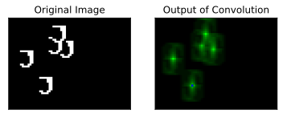
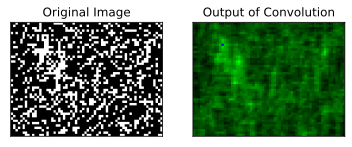
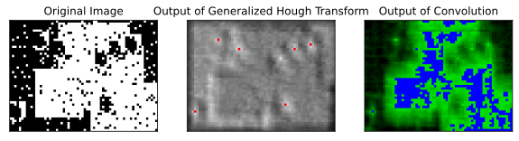

Computer Vision - Generalized Hough Transform
Jacky Baltes
National Taiwan Normal University
Taipei, Taiwan
jacky.baltes@ntnu.edu.tw

import matplotlib.pyplot as plt
import numpy as np
import math
import random
def arrayToPre( arr ):
s = "<pre>" + "\n"
for y in range(len(arr) ):
for x in range( len(arr[y] ) ):
s = s + ' {0:3d}'.format(arr[y,x] )
s = s + '\n'
s = s + '\n'
s = s + '</pre>'
return s
shape = np.array( [ [ 1, 1, 1, 1, 1, 1, 1 ],
[ 0, 0, 0, 0, 1, 1, 1 ],
[ 0, 0, 0, 0, 1, 1, 1 ],
[ 0, 0, 0, 0, 0, 1, 1 ],
[ 0, 0, 0, 0, 0, 1, 1 ],
[ 0, 0, 0, 0, 0, 1, 1 ],
[ 0, 0, 0, 0, 0, 1, 1 ],
[ 1, 1, 0, 0, 1, 1, 0 ],
[ 0, 1, 1, 1, 1, 0, 0 ] ] )
Generalized Hough Transform
Extend Hough transform to other shapes that can be represented by a fixed set of parameters.
Assume that we want to find the following shape
1 1 1 1 1 1 1 0 0 0 0 1 1 1 0 0 0 0 1 1 1 0 0 0 0 0 1 1 0 0 0 0 0 1 1 0 0 0 0 0 1 1 0 0 0 0 0 1 1 1 1 0 0 1 1 0 0 1 1 1 1 0 0
def createImage( width, height, shape, nRect = 0, nNoise = 0, nShapes = 0 ):
img = np.zeros( ( height, width ) )
height, width = img.shape
sheight, swidth = shape.shape
for i in range( nRect ):
x = int(random.random() * width )
y = int(random.random() * height )
size = 1 + int( random.random() * width/2 )
img[ y:y+size, x:x+size ] = 1.0
for p in range( nShapes ):
x = int(random.random() * ( width - swidth ) )
y = int(random.random() * ( height - sheight ) )
img[y:y+sheight, x:x+swidth ] = shape
for i in range( nNoise ):
if random.random() > 0.5:
c = 1.0
else:
c = 0.0
img[ int(random.random() * height), int(random.random() * width) ] = c
return img
import cv2
def templateMatching(img, shape ):
#print(img.shape, img.dtype)
g = cv2.filter2D( img, cv2.CV_64F, shape )
r = np.zeros( g.shape )
b = np.zeros( g.shape )
#print(g.shape, g.dtype)
return cv2.merge( (r, g/np.max(g), b) )

img = createImage( 64, 48, shape, 0, 2000, 7 )
fig = plt.figure()
ax1 = fig.add_subplot(1,2,1)
ax1.set_title('Original Image')
ax1.imshow(img, cmap='gray')
ax1.set_xticks([])
ax1.set_yticks([])
out = templateMatching( img, shape )
b,g,r = cv2.split( out )
mg = np.max(g)
b = np.where( g >= mg, 1.0, 0.0 )
g = np.where( b == 1, 0.0, g )
#print(r.shape, g.shape, b.shape )
#print(r.dtype, g.dtype, b.dtype )
out2 = cv2.merge( (r, g, b) )
ax2 = fig.add_subplot(1,2,2)
ax2.set_title('Output of Convolution')
ax2.imshow(out2)
ax2.set_xticks([])
ax2.set_yticks([])
img_ = addJBFigure( "noise1", 0, 0, fig )
plt.close()
Convolution with Noise

Generalize Hough Transform
Any shape that can be represented with a fixed number of parameters can be found using this approach.
Let us try and find the shape using the Generalized Hough transform
def generalizedHoughTransform( img, shape ):
height, width = img.shape
sheight, swidth = shape.shape
hough = np.zeros( img.shape )
for y in range( height ):
for x in range( width ):
pix = img[y,x]
for sy in range( sheight ):
for sx in range( swidth ):
if shape[sy,sx] == pix:
cx = x - sx + swidth//2
cy = y - sy + sheight//2
if ( cx >= 0 ) and ( cx < width ) and ( cy >= 0 ) and ( cy < height ):
hough[cy,cx] = hough[cy,cx] + 1
return hough
img = createImage( 64, 48, shape, 10, 500, 7 )
fig = plt.figure( figsize=(10,10))
ax1 = fig.add_subplot(1,3,1)
ax1.set_title('Original Image')
ax1.imshow(img, cmap='gray')
ax1.set_xticks([])
ax1.set_yticks([])
h = generalizedHoughTransform( img, shape )
hm = np.max(h)
hlim = 0.9 * hm
#print(r.shape, g.shape, b.shape )
#print(r.dtype, g.dtype, b.dtype )
b = np.where( h >= hlim, 1.0, 0.0 )
g = np.where( b == 1, 0.0, h )
out2 = cv2.merge( (h/hm,h/hm,h/hm) )
out2[ h > hlim ] = (255, 0, 0 )
ax2 = fig.add_subplot(1,3,2)
ax2.set_title('Output of Generalized Hough Transform')
ax2.imshow(out2)
ax2.set_xticks([])
ax2.set_yticks([])
ax3 = fig.add_subplot(1,3,3)
ax3.set_title('Output of Convolution')
out3 = templateMatching( img, shape )
b,g,r = cv2.split( out3 )
mg = 0.9 * np.max(g)
b = np.where( g >= mg, 1.0, 0.0 )
g = np.where( b == 1, 0.0, g )
#print(r.shape, g.shape, b.shape )
#print(r.dtype, g.dtype, b.dtype )
out3 = cv2.merge( (r, g, b) )
ax3.imshow(out3)
ax3.set_xticks([])
ax3.set_yticks([])
hm = addJBFigure("hm", 0, 0, fig )
plt.close()
Output of Generalized Hough Transform
